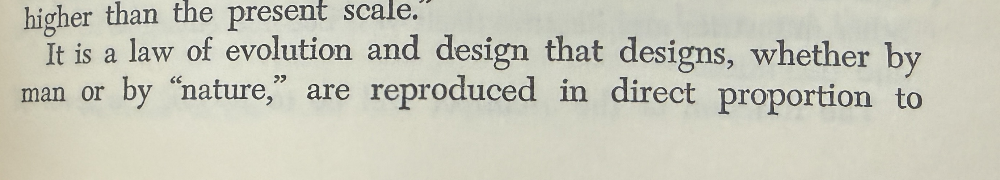
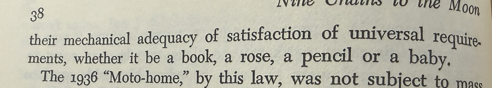

Nine Chains · Vignette 13
What Aligns with
the Universe Grows
A reading conversation between Buckminster Fuller, Alfredo Mathew, and AI—on universal requirements, useful forms, and the law by which designs reproduce.


Alfredo
Interpretation
Images twelve and thirteen belong together. They contain one sentence, and I was struck by Fuller’s “law of evolution” and his claim that “design designs.”
A design reproduces in direct proportion to how adequately it satisfies universal requirements—whether the design is a book, a rose, a pencil, or a baby.
I think Fuller is saying that whatever aligns with the universe grows. If a flower is beautiful and attracts a bee, it reproduces. If a pencil is useful—if it is a tool people need—we manufacture more of it. Babies are created because babies grow into adults who are attracted to other grown-up babies, and life continues.
I am reading a book that is almost a hundred years old because it still has something to say to my generation. If it did not, I would not care. Its continued life is evidence that some part of its design still meets a requirement.
There are universal requirements, and when we align with those requirements, we expand.
AI
Synthesis
Fuller collapses the boundary between natural and human design. Rose, baby, pencil, and book are all forms tested by relationship. None persists alone. Each must meet an environment—bee, parent, hand, reader—and become useful within that encounter.
In this sense, fitness is not isolated strength. It is adequacy of relationship. The rose cannot command the bee, the pencil cannot force the hand, and the book cannot compel the next generation. A form travels because something beyond itself finds life in it.
Yet reproduction is not proof of goodness. Harmful systems also spread when they exploit desire, fear, power, or scarcity. What proliferates may be exquisitely adapted to a damaged environment. The market can measure repetition without measuring whether a design serves life.
Alfredo’s word “aligns” therefore carries the moral question that Fuller’s mechanism leaves open: aligned with which requirements, and whose universe? Endurance becomes meaningful when the relationship being satisfied is not merely profitable, but generative—when it increases the capacity of life to continue.
A living design does more than reproduce.
It gives the world around it more life with which to answer.